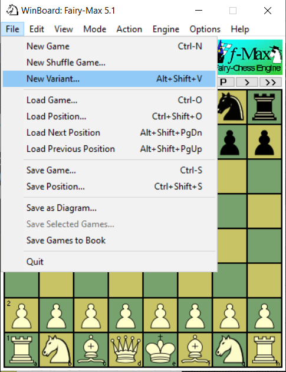

Winboard เป็นโปรแกรมยอดฮิตในการเล่นหมากรุก ด้วยขีดความสามารถที่หลากหลาย
ทั้งฝึกเดินหมาก ทำบันทึกหมาก เล่นกับตนเอง เล่นกับคอมพิวเตอร์ และเล่นกับผู้คนในโลกอินเตอร์เน็ต ด้วยขีดความสามารถที่สามารถเล่นหมากรุกได้
หลากหลาย ทั้งหมากรุกสากล หมากรุกไทย หมากรุกจีน หมากรุกญี่ปุ่น หรือแม้กระทั่งหมากฮอส จึงเป็นที่นิยมในเหล่านักกีฬาหมากรุก อย่างไรก็ตาม
เมื่อมีเด่นก็ย่อมมีด้อย เนื่องจากรูปภาพตัวหมากรุกไม่สวยงามตามแบบหมากรุกไทยที่คุ้นชิน ทำให้หลายคนไม่ชอบโปรแกรมนี้

ผมก็ไม่ชอบเช่นกัน จึงได้ลงทุนทำฟ้อนต์หมากรุก MakrukFont ซึ่งก็คือ true type font ที่ใช้กันในวินโดว์สนี่แหละ แต่แทนที่จะเป็นอักษร กลับเป็นรูปตัวหมากรุกแทน ผมดูจากที่ฝรั่งเขาทำไว้ แล้วดัดแปลงเป็นตัวหมากรุกไทย ซึ่งข้อดีคือเป็นภาพเวคเตอร์ เมื่อขยายแล้วไม่แตก และสามารถใช้ในโปรแกรมต่าง ๆ ได้ง่ายด้วยเป็นฟ้อนต์ธรรมดา และเจ้าวินบอร์ดนี่ก็สามารถแปลงฟ้อนต์ให้เป็นรูปตัวหมากแสดงในโปรแกรมได้ ทำให้ไม่ขึ้นอยู่กับเวอร์ชั่นของโปรแกรม ด้วยโปรแกรมและฟ้อนต์แยกกันอยู่ต่างหาก ผลที่ได้มาประมาณนี้ครับ

- ดาวโหลดฟ้อนต์จากGithub ที่ผมทำไว้
- แตกไฟล์ makrukfont.rar ที่ดาวโหลดมาจะได้ makrukfont.ttf
- คลิกขวาที่ไฟล์ makrukfont.ttf แล้วเลือก open with แล้วเลือก Windows font viewer
- คลิก Install วินโดว์สจะดำเนินการติดตั้งฟ้อนต์ให้อัตโนมัติ เป็นพันเสร็จขั้นตอนแรก
ก. เปิดโปรแกรม winboard เพื่อตั้งค่า (หากยังไม่ได้ติดตั้ง สามารถดาวน์โหลดไฟล์สำหรับติดตั้งโปรแกรมได้ที่ เว็บไซต์หลักของวินบอร์ด เวอร์ชันที่เสถียรที่สุดอยู่ที่ winboard 4.8.0 เป็นไฟล์ติดตั้งอัตโนมัติ ส่วนเวอร์ชั่นล่าสุดเป็นเวอร์ชั่นทดลอง winboard-AA เป็นไฟล์บีบอัด แตกไฟล์ในโฟลเดอร์ที่ต้องการก็ใช้ได้ แล้วคลิกที่ winboard.exe)
เปิดวินบอร์ดขึ้นมา คลิก OK แล้ว เลือก File>New Variant...

จะได้การตั้งหมากแบบหมากรุกไทย แต่ตัวหมากจะเป็นแบบสากล

ข. ตั้งค่าฟ้อนต์
- เลือกเมนู View > Font จะปรากฏหน้าต่างการเลือกประเภทของฟ้อนต์ขึ้นมา

- ในประเภท Piece Font ให้คลิกเลือก Choose จะปรากฎหน้าต่างสำหรับเลือกชื่อฟ้อนต์ ให้เลื่อนลงไปเลือก MakrukFont จากนั้นคลิก Ok มันจะกลับไปหน้าต่างเลือกชนิดฟ้อนต์ ให้คลิก Ok อีกที เพื่อปิดหน้าต่าง
ค. ตั้งค่าสี
- เลือกเมนู View > Color จะปรากฎหน้าน้าเลือกสีของกระดานขึ้นมา

- ส่วนของ White Pieces ให้คลิกที่ ... แล้วเลือกสีขาว
- ส่วนของ Black Pieces ให้คลิกที่ ... แล้วเลือกสีดำ
- ส่วน Light Squares และ Dark Squares จะเลือกหรือไม่ก็ได้ แต่ในที่นี้ผมเลือกเป็นสีน้ำตาลเหมือนกันเลย เพราะหมากรุกไทยไม่ใช้ตาสลับสี
- คลิก Ok เพื่อออกจากหน้าต่างนี้
ง. ตั้งค่าธีมของกระดาน
- เลือกเมนู View > Board Themes
จะปรากฎหน้าต่างตั้งค่าธีมขึ้นมา ตั้งค่าดังนี้

-- Theme name : ให้ใส่ค่า Makruk
-- (หากต้องการพื้นหลังเป็นลวดลาย) ให้ติ๊กเครื่องหมายถูกหน้า Use board textures
สีของบอร์ดจากไฟล์ bmp ในโฟลเดอร์ textures ของวินบอร์ด ผมเลือกลายไม้ wood_d.bmp ทั้ง Dark-squares และ Light-squares
ส่วนตำแหน่งไฟล์ขึ้นอยู่กับว่าคุณลงโปรแกรมไว้ที่ไดร์ฟอะไร ของผมลงไว้ที่ D จึงเป็นอย่างนี้
(D:\WinBoard\Winboard\textures\wood_d.bmp)
-- (หากต้องการภาพกรอบของบอร์ด) ให้ติ๊กเครื่องหมายถูกหน้า Draw border around board
เลือกกรอบของบอร์ดจากไฟล์ bmp ในโฟลเดอร์ backgrounds ของวินบอร์ด ผมเลือกลายไม้ wood_rim.bmp
(ตำแหน่งไฟล์ D:\WinBoard\Winboard\backgrounds\wood_rim.bmp)
-- (** สำคัญ **) ให้ติ๊กเครื่องหมายถูกหน้า Use piece font แล้วใส่ค่า Font size (%) : 80
ส่วน Font name มันจะขึ้นมาเองว่าเป็น MakrukFont (เพราะเราเลือกในหัวข้อก่อนนี้แล้ว)
ส่วน Font piece to char อันนี้สำคัญ ต้องใส่ลำดับให้ถูกต้องเป็น PNBRQF....SKpnbrqf....sk เท่านั้น
จากนั้นกด OK จะได้ภาพกระดานหมากรุกไทยที่คุ้นตา และสวยงาม
ขอให้สนุกครับ!
หากท่านเห็นว่ามีประโยชน์กรุณาบริจาคผ่าน paypal
If you like this project, please support its development via paypal